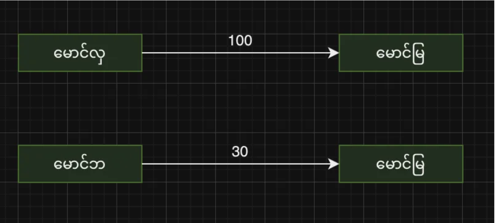
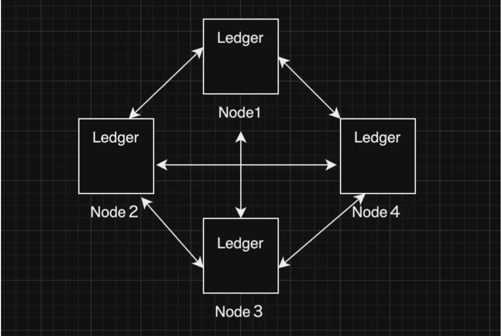

Blockchain ကို အတိုချုံး ပြောရမယ်ဆိုရင်တော့ immutable, distributed ledger လို့ပြောလို့ရပါတယ် မေးစရာရှိလာတာက ledger ဆိုတာဘာလဲ? Ledger ဆိုတာ a collection of financial accounts or transactions ဖြစ်ပါတယ် ဆိုလိုတာကတော့ database နဲ့ခပ်ဆင်ဆင်ပါဘဲ အဓိကကတော့အချက်အလက်တွေကိုသိမ်းဆည်းတာပါဘဲ ledger တခုကိုဉပမာ ပြရရင်တော့အောက်ကပုံစံအတိုင်းပါဘဲ မောင်လှကနေမောင်မြကို၁၀၀ကျပ်လွှဲလိုက်တယ် အဲ့တာကို transsionတစ်ခုအနေနဲ့ယူဆလို့ရတယ်။ မောင်ဘကနေမောင်မြကို၃၀ကျပ်လွှဲလိုက်တယ် အဲ့တာကို transsionတစ်ခုအနေနဲ့ယူဆလို့ရတယ်။ Ledger တစ်ခုကဒါမျိုးအချက်လက်တွေကိုသိမ်းဆည်းပါတယ်။တကယ့်လုပ်ငန်းခွင်မှာသုံးတဲ့projectတွေမှာဆိုရင်အဲ့လိုအချက်အလက်တွေအပြင်ကပမာဆို၇င် pdf file တွေကို Hash ပြောင်းထားတဲ့ဟာကို သိမ်းဆည်းတာလည်းဖြစ်နိုင်ပါတယ်
Immutable ဆိုတာဘာလဲ?
Immutable ဆိုတာ ကတော့ ledger တွေမှာသိမ်းဆည်းထားတဲ့အချက်အလက်တွေကပြောင်းလဲလို့မရဘူးပေါ့နော် ဥပမာဆိုရင် User A ကနေ User B ကို BTC ၃၀ လောက် လွဲလိုက် တယ် ဆို ပါစို့ BTC ၃၀ ကို ၅၀ လို့ပြောင်းလို့မရတော့ပါဘူး ဘယ်သူမှပြောင်း လို့မရတော့ပါဘူး Traditional database ( mongoDB, mysql ) လို ကောင်မျိုးတွေမှဆိုရင် database adminstrator လို လူ က database ထဲကအချက် အလက် တွေကို ပြောင်း တာမျိုး ဖျက် ပစ် တာမျိုး တွေဖြစ်နိုင်ပါတယ် blockchain မှာတော့ဒါမျိုးလုပ်လို့ မရပါဘူး ဘာလို့လုပ်လို့မရတာလဲဆိုတာကို နောက် ပိုင်း အခန်း တွေမှာ code နဲ့တကွအသေးစိတ်ရှင်းပြသွားပါမယ် အဲ့တာကြောင့်လဲ blockchain ကိုအသုံးပြုတဲ့ projectတွေမှာဆိုရင်တကယ့်sensitive informationတွေကိုသိမ်းဆည်းပါတယ်။ဆိုလိုချင်တာကတော့တကယ့်အရေးကြီးသောအချက်အလက်တွေကို blockchain ထဲမှာသိမ်းဆည်းပါတယ်။ဥပမာဆိုရင်capitalization tableလိုကောင်မျိုးတေကိုသိမ်းဆည်းတာမျိုးပေါ့။capitalization tableရဲ့အဓိပ္ပါယ်ကိုဒီမှာအသေးစိတ်ရှင်းမပြတော့ပါဘူး။
Distributed ဆိုတာဘာလဲ?
Distributed ဆိုတာ က not controlled by a single entity ဆိုလိုတာကတော့ လူတစ်ဦးတစ်ယောက် ( သို့ ) အဖွဲ့အစည်းတစ်ခု ( သို့ ) ကုမ္ပဏီ တစ်ခုခု ကနေ ထိန်းသိမ်းထားတာမျိုး၊ ချုပ်ကိုင်ထားတာမျိုးလုပ်လို့မရဘူးလို့ ပြောတာမျိုးပါယနေ့ခေတ်မှာဆိုရင်ကုမ္ပဏီတခုခု(သို့) လူတယောက်ယောက်ကနေထိန်းချုပ်ထားတဲ့ application တွေ website တွေကိုတွေ့မြင်နိုင်ပါတယ်။ဥပမာဆိုရင်social media applicationတွေဖြစ်တဲ့facebook, youtube,tiktokတွေမှာဆိုရင်အသုံးပြုသူကိုယ်တိုင်တောင်မှကို့ရဲ့အချက်အလက်တေကိုမပိုင်ဆိုင်ပါဘူး။သက်ဆိုင်ရာကုမ္ပဏီတွေကပဲသိမ်းဆည်းထား၊ ပိုင်ဆိုင်ထားတာပါ။blockchainမှာတော့အဲ့တာမျိုးမဟုတ်ပါဘူး။blockchainကdistributed networkတစ်ခုဖြစ်ပါတယ်။လူတစ်ဦးတစ်ယောက် ( သို့ ) အဖွဲ့အစည်းတစ်ခု ( သို့ ) ကုမ္ပဏီ တစ်ခုခု ကနေ blockchainထဲမှာရှိတဲ့အချက်အလက်တွေကိုပြင်ဆင်တာမျိုး၊ဖျက်ပြစ်တာမျိုးလုပ်လို့မရပါဘူး။blockchainကိုဘယ်သူကပိုင်ဆိုင်ထိန်းချုပ်တာလဲဆိုတော့blockchain networkထဲမှာပါဝင်တဲ့လူတစ်ဦးတစ်ယောက်ချင်းစီကပါ။ပြောမယ်ဆိုရင်တော့dictatorshipနဲ့democracyကွာခြားလိုမျိုးcentralized နဲ့ distributedကကွာခြားပါတယ်။democracyမှာအာဏာကလူထုကဆင်းသက်သလိုမျိုးblockchainကလဲအဲ့လိုမျိုးပါပဲ။ဥပမာbitcoinမှာဆိုရင်တစ်ကမ္ဘာလုံးကbitcoin networkထဲမှာရှိတဲ့လူတွေကပဲhost လုပ်ပေးထားတာပါ။bitcoinနဲ့ပတ်သက်တဲ့အချက်လက်တွေအကုန်လုံးကလူတစ်ဦးတစ်ယောက် ( သို့ ) အဖွဲ့အစည်းတစ်ခု ( သို့ ) ကုမ္ပဏီ တစ်ခုခု ကမပိုင်ဆိုင်ပါဘူး။အဲ့တာတော့blockchainရဲ့အဓိကအားသာချက်ပါပဲ။လူတစ်ဦးတစ်ယောက် ( သို့ ) အဖွဲ့အစည်းတစ်ခု ( သို့ ) ကုမ္ပဏီ တစ်ခုခု ဆီမှာအချက်လက်တွေကိုသိမ်းဆည်းထားခြင်းမရှိပဲblockchain networkထဲမှာပါတဲ့လူတိုင်းဆီမှာအချက်အလက်တွေကိုသိမ်းဆည်းထားပါတယ်။blockchain networkထဲမှာပါတဲ့လူတဦးတယောက်ချင်းစီကိုnodeတစ်ခုလို့ခေါ်ပါတယ်။nodeတခုချင်းစီမှာတူညီတဲ့ledger dataပါရှိရပါမယ်။ဆိုလိုတာကnode 1မှာအပေါ်မှာရေးထားတဲ့အတိုင်းမောင်လှကနေမောင်မြကို၁၀၀ကျပ်လွှဲလိုက်တယ် ။မောင်ဘကနေမောင်မြကို၃၀ကျပ်လွှဲလိုက်တယ် အဲ့ transaction နှစ်ကြောင်းကိုnode 1မှာသိမ်းထားတယ်ဆိုရင်node 2မှာအဲ့လိုဖြစ်ရပါမယ်။node 2မှာ transaction တစ်ကြောင်းတည်းဖြစ်နေတာမျိုး၊ သုံးကြောင်းဖြစ်နေတာမျိုး ဖြစ်လို့မရပါဘူး အဲဒါကို nodes တွေကြားထဲမှာ synchronization လုပ်ထားတယ်လို့ပြောလို့ရပါတယ်။
တော်တော်များများက blockchain ဆိုရင် cryptocurrencyနဲ့တွဲမြင်ကြပါတယ်။ တကယ်တော့ blockchainကိုတခြားနေရာတွေမှာသုံးလို့ရပါတယ်။ဥပမာဆိုရင် voting applicationလိုမျိုး၊crowdfunding applicationတွေမှာသုံးလို့ရပါတယ်။blockchain တွေကို financial services industries, health care industries, credit industries and energy industries တွေမှာသုံးနိုင်ပါတယ်။ နောက်အပိုင်းတွေမှာဆိုရင် blockchain prototypeတစ်ခုကိုJavascript languageue ကိုအသုံးပြုပြီးရေးသားသွားပါမယ်။